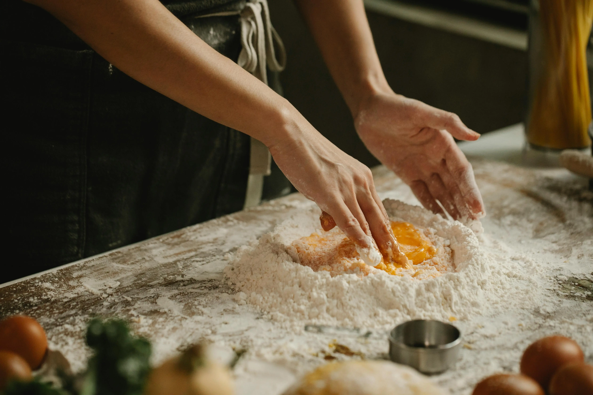

Fresh Egg Pasta Dough
Home

Fresh egg pasta dough is a traditional Italian dough used to make fresh pasta. It is made primarily from flour and eggs.
Ingredients
- Tipo 00 flour
- Free range eggs
Note
The hydration level, or the ratio of eggs to flour, is crucial for achieving the right texture.
A typical ratio is 55-57% hydration, meaning for every 100 grams of flour, you would use 55-57 grams of eggs.
Instructions
-
Mixing: Start by making a well in the center of a mound of flour on a clean work surface.
Break the eggs into the well and use a fork to gently mix the eggs with the flour, gradually incorporating more flour as you mix.
Alternatively, you can whisk the eggs in a separate bowl and then add them to the well.
-
Kneading: Once a rough dough is formed, knead the dough for about 8 to 10 minutes until it becomes smooth and elastic.
If the dough feels too dry, sprinkle your fingers with a little water and continue kneading.
If it’s too sticky, dust more flour onto your work surface.
-
Resting: After kneading, divide the dough into halves and pat each half into an approximately 1-inch-thick square.
Wrap the dough tightly in plastic and let it rest for at least 1 hour and up to 3 hours before using.
-
Rolling and Cutting: After resting, the dough can be rolled out and cut into various pasta shapes.
To prevent sticking, dust the dough and the pasta cutter with semolina flour.
-
Cooking: Fresh pasta cooks much quicker than dried pasta.
Depending on the thickness of the pasta, it can cook in as little as 1-3 minutes.
Bring a large pan of salted water to the boil, add the pasta and cook until al dente.